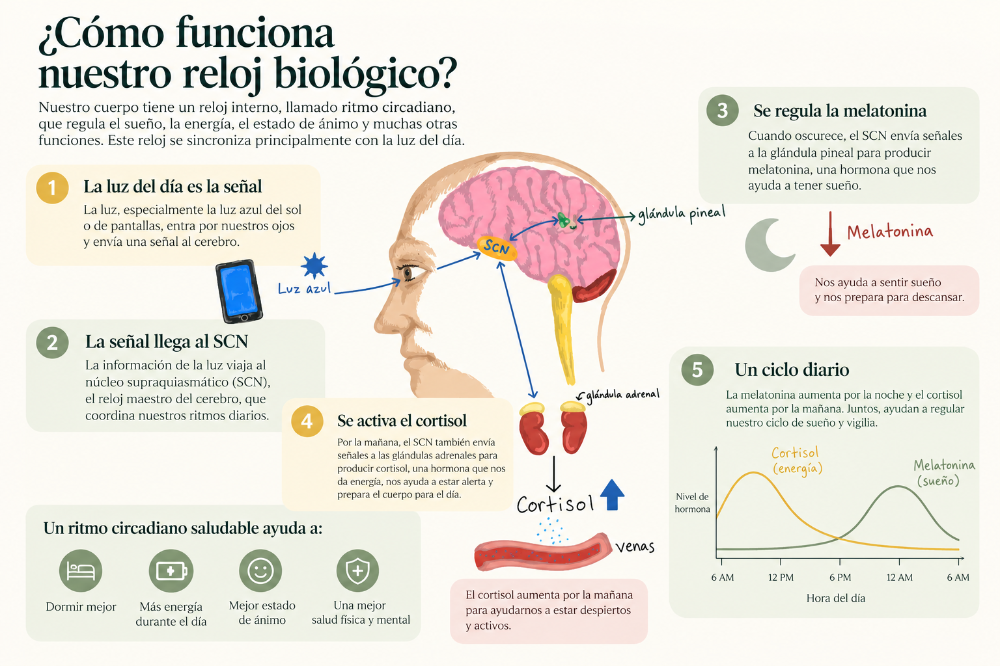

¿Cómo funciona nuestro reloj biológico?
Nuestro cuerpo tiene un reloj interno que ayuda a regular cuándo sentimos sueño, cuándo estamos despiertos y cómo respondemos a la luz durante el día.

¿Qué es el ritmo circadiano?
El ritmo circadiano es un ciclo biológico de aproximadamente 24 horas que ayuda a coordinar diferentes funciones del cuerpo, incluyendo el sueño, la temperatura corporal y la liberación de ciertas hormonas.
Una región del cerebro llamada núcleo supraquiasmático actúa como reloj central. Recibe información sobre la luz del ambiente a través de los ojos y ayuda a sincronizar los ritmos del cuerpo con el día y la noche.
¿Por qué importa la luz?
La luz es una de las señales más importantes para nuestro reloj biológico. La exposición a la luz durante la mañana puede ayudar a mantener un horario regular de sueño y vigilia.
Por la noche, la exposición a luz intensa, especialmente a ciertas longitudes de onda presentes en las pantallas, puede retrasar el inicio de la liberación de melatonina y dificultar que algunas personas concilien el sueño.
Melatonina y cortisol
La melatonina es una hormona cuya liberación generalmente aumenta durante la noche. Ayuda a señalar al cuerpo que es el momento biológico de descansar.
El cortisol también sigue un ritmo diario. Normalmente aumenta alrededor del despertar y participa en la regulación de la energía y otras funciones del organismo.